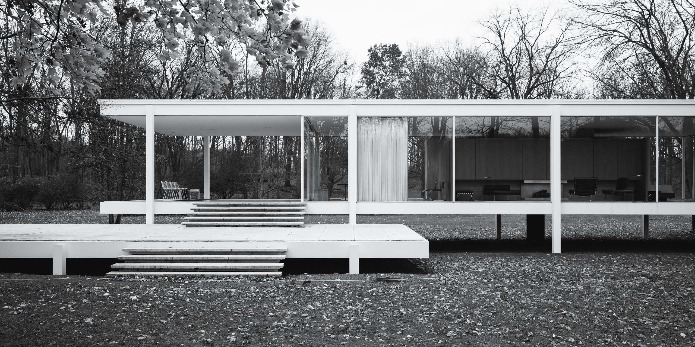

Farnsworth House: A UX Study
Fifty-five miles outside Chicago, on the bank of the Fox River stands an iconic modernist house constructed for and named after its owner, Dr. Edith Farnsworth. The building was a work of Ludwig Mies van der Rohe, a renowned architect and former director of Bauhaus, whose famous quotes include “less is more” and “God is in the details.”
The house, without surprise, is unmistakably a manifesto of its creator’s words: Simple, elegant, with meticulous details everywhere. Yet during its construction and after, it had raised controversy and criticism for both its design and its client–architect relationship. To learn more about its story and to take away lessons that we can learn from it as designers and UX practitioners, I visited the house in Plano, Illinois in November.
The good, the bad, and the ugly
The Farnsworth House is a true architecture icon. From the outside, it is text-book modernist: straight lines, right angles, glass, concrete, steel painted in white — all to create a form serving its function: a shelter for weekend retreats.
Yet despite the heaviness of its building materials, the house manages to embody lightness by floating its body and patio above the ground, connecting only through stairs and thin columns. True to the architect’s “less is more” ideal, this is not merely a visual trick: the elevated floor also protects the house from floods which frequent this area during summer (but more on that later).
From the inside, the visual cleanliness continues with two other materials: marble for the floor, and wood for the doors and “walls”. The house takes open floor plan to the extreme: other than the kitchen and two bathrooms, there is no predefined function for any space — “bedroom” is wherever the owner decides to put the bed. As a result, a simple shuffling of furniture can fundamentally change the layout of the house.
What truly makes this house a masterpiece is the attention to detail. Water, sewage, and electricity all go through a utility stack located at the center of the house, disguised as a central column connecting the house to the ground. The chimney is designed to extend so low that it’s invisible when viewed from ground level.
Inside the house, power outlets are integrated into the floor, a common practice in office buildings but unconventional to homes, since the perimeter is surrounded by glass. In the kitchen, all appliances are integrated into the cabinets with a universal white appearance (perhaps common nowadays, but quite novel in the 1950s when the house was built); the entire countertop is stamped from a single piece of stainless steel, with a built-in sink and cutouts for the burners, forming a seamless surface that’s easy to clean, and free of gaps for food scraps to fall into.
However, the house is not perfect in terms of practicality. One example is the curtains. The architect originally insisted that there was no need for the curtains, for the house was located in a rural area facing the river. The client, on the other hand, insisted that despite the rural environment, she couldn’t live in an all-glass house with nothing to protect her privacy. The architect eventually agreed to install the curtains. Another example is storage space. According to the architect, there was not much need for storage space as this was only a weekend house; the only storage available was in the kitchen — cupboards above and cabinets below. When the client asked where she would put her clothes, the architect said she could use one of the cupboards — along with her food, tableware, and kitchen utensils. In the end, the client wasn’t able to convince the architect, so she hired someone else to build a wardrobe for the house after it was finished.
But perhaps the biggest flaw in the house’s design is how it copes with the climate. In the summer, there can be very heavy rainfall in the area, resulting in floods. When designing the house, the architect took that into consideration and compensated it by elevating the floor 5 feet above the ground, which was just above the 100-year flood level. However, the power of nature (perhaps human activity as well) was underestimated. In 1954, 1996, and 2008, the flood level was high enough that water went into the building, damaging the floor, furniture, and even the glass wall. Each incident cost its owner a considerable amount of time and money to restore the house and to replace the furniture beyond repair.
Takeaways
So what can we learn from it? Although it was a project of architecture, I found it in many ways similar to a project of digital products, such as a website or mobile app, and we can get many inspirations when comparing the two. Here’s what I’ve learned.
Lesson 1: Less is more, as long as you don’t ignore the user’s needs. As the client, when Dr. Farnsworth came to the architect to design the house, she deliberately asked it to be a modern, minimalist one. In that regard, the house was very successful. It fulfilled the client’s request; moreover, it became an icon of modernist architecture and minimalism. But in Dr. Farnsworth’s case, the client happened to be the user as well. As the user, she was concerned about practicality—or, usability—of the house, asking it to also be a functional one. In this regard, the house was less successful. It failed to address some of the user’s needs, forcing her to either accept the architect’s way, or put a patch on the house to make it functional.
Today, a client would walk into the door asking to design a modern, minimalist—or perhaps, “flat”—website or mobile app. But however the client is eager to push the design towards that direction, don’t forget to check what the user really needs. Sometimes, like Dr. Farnsworth, the client is the user. More often, though, the client is not, and doesn’t understand the user well enough—that’s why they came to us in the first place. Our job as UX designers is to speak for the user and create things that will work for them, not against them. If you find the client’s request getting in the way, remind them that we’re not building a house for them to look at, but one for the user to live in.
Lesson 2: God is in the details. So spare no effort in making something truly great. An important reason why Farnsworth House received much acclaim was because it was an embodiment of the architect’s vision and philosophy. In its simplistic form and building materials, he demonstrated his understanding of modern architecture and the International Style; in its open floor plan, he expressed his idea of giving the individual freedom while surrounding her with the beauty of nature. His attention to detail is also what made the house a true masterpiece. The single utility tube and low chimney provided function without clutter; the all-white kitchen appliances emphasized consistency; and the one-piece countertop served both aesthetics and usability.
All of these can be applied to our work when designing a digital product. As designers, we should avoid injecting our personal preference and bias into the work. But at the same time, we should always remember why we do what we do. We’re ultimately responsible for the things we put into the world, so we need to make sure that whatever we’re designing aligns with our philosophy and vision. We are the gatekeepers. So keep that bar high; go that extra mile; do that “one more thing” that might put a smile on the user’s face. Make something that you’re truly proud of, that you’re willing to put your signature on.
Lesson 3: Design with the future in mind. On the one hand, many design features of the house have inspired later architects and thus influenced architecture as a whole; in a way, they made it timeless. On the other hand, the flooding problem was becoming worse and worse with the climate change in the past two decades, proving that the original design was inadequate in preparedness for the future.
Looking at digital technologies, the change in the past two decades was much more dramatic than that of the climate; the pace at which it’s advancing will only go faster. While advancement in technology sometimes results in inevitable redesign and reconstruct of existing products, as designers we should still strive for long-lasting and sustainable designs. No forward-thinking is enough, especially for the web and mobile, as they’re still evolving incredibly fast. What works today may not work tomorrow. Therefore, instead of trying to design something that will stand the test of time for digital, we should focus more on designing products that are expandable and scalable, and easily maintainable so it can adapt to newer technologies when they become available. Digital products should resemble living organisms rather than fixed statues.
Closing
To preserve the house from future floods, a project has been initiated to seek for a permanent solution to the problem. Current candidates include elevation, relocation, and a hydraulic system, each having its own advantages and disadvantages. Whichever they eventually decide to carry out, I hope that plan can help the house so all of us will still be able to visit and admire it in the years to come.